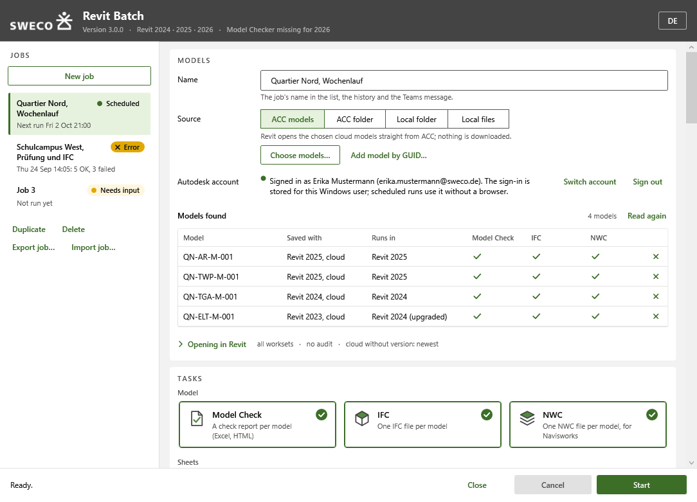
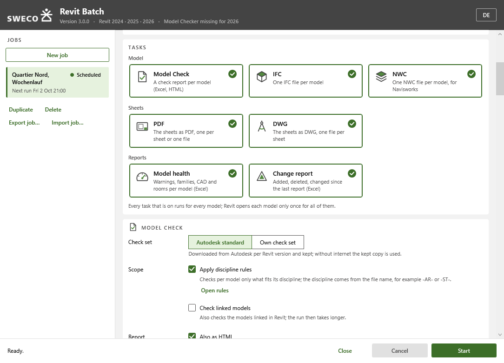
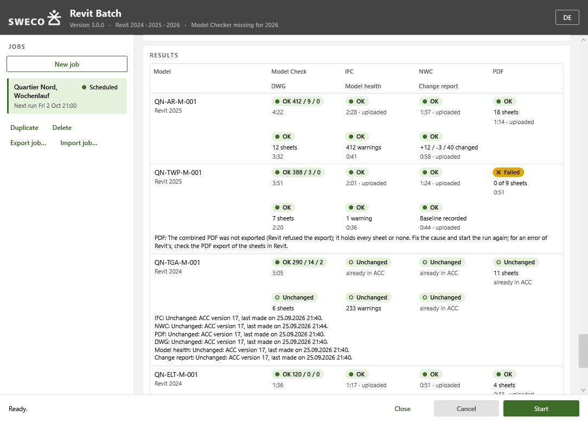
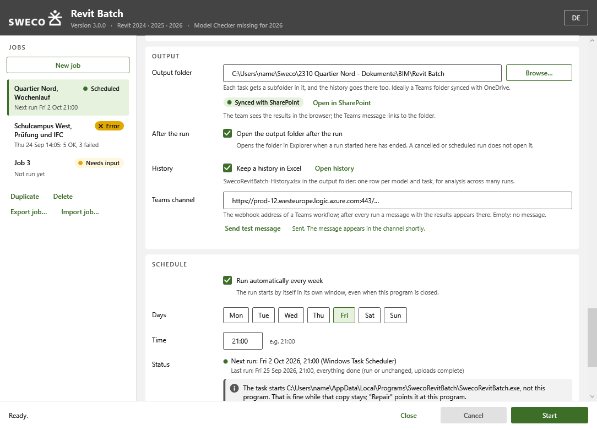

Sweco Revit Batch
Set up a job once, let it run every week.
- C#
- .NET Framework 4.8 / .NET 8 / .NET 10
- Revit API
- WPF
- Autodesk Platform Services
- Windows Task Scheduler
The problem
Model checks and deliverable exports are the jobs everyone agrees matter and nobody has time to run by hand on dozens of models every week.
What it does
A desktop program and a headless Revit worker that run seven tasks across many models in one go, now or on a weekly schedule: Autodesk Model Checker, the IFC export, the NWC export for Navisworks, PDF and DWG sheet exports, a model health report and a change report. The program starts the matching installed Revit in the background, opens each model once, runs every chosen task on it and closes it without saving.
Four kinds of source: chosen ACC cloud models, an ACC folder, a local or network folder, or a fixed list of files. Folders are read again at every run, so new models are picked up, and exports and reports can be uploaded back to ACC afterwards.
Repeat runs cost little. A model whose source, settings and outputs have not changed since the last verified run is skipped. Results land in one output folder with a history workbook for Excel and Power BI, plus an optional Teams message after each run.
One codebase builds four apps: the combined tool and three single-task editions (Bulk Model Checker, IFC Bulk Export, NWC Bulk Export) that replace earlier standalone tools. Bulk Model Checker and IFC Bulk Export also continue as company-neutral standalone tools.
See it
Screenshots & demos



